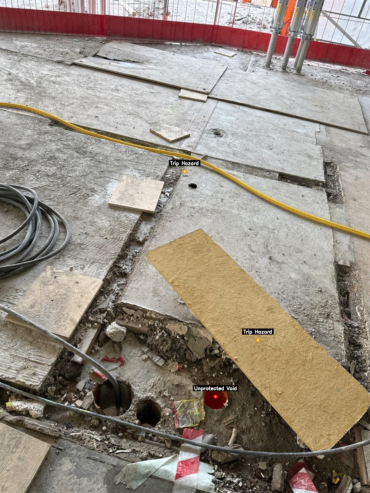

Construction sites are highly dynamic and mentally demanding work environments. In 2022, Canada recorded 28,512 lost-time injuries in the construction sector. Because the majority of these claims were linked to struck-by hazards, researchers argue that the inherent dynamism of construction sites reduces situational awareness, making hazard identification exceedingly difficult. A proposed method for mitigating these effects is the deployment of rapid-tempo attention cycles facilitated by artificial intelligence (AI). Although many out-of-the-box models possess basic vision-reasoning capabilities, successful workplace adoption requires high levels of accuracy, rendering general models unsuitable for direct workflow integration. However, as demonstrated in recent benchmarks, hybrid approaches combining specialized models can achieve human-level accuracy. In this paper, we present and benchmark GEMMS, a novel hybrid vision-language model coupling Gemma 3 and Segment Anything 3 (SAM3) for automated site safety auditing. This study specifically evaluates GEMMS's accuracy in detecting safety issues across different photographic capture styles. Our findings indicate that while highly accurate, autonomous hazard prediction is possible using intentional focal imagery, the processing of passive 360-degree imagery currently requires semi-autonomous interaction to be effectively utilized in safety workflows.
Construction sites, characterised as dynamic and fast paced spaces by [1], are mentally demanding work environments([2],[3],[4]). Data from [5] presents that, Canada in 2022 has recorded 28512 lost time injuries in construction sector while in United Kingdom a ma- jority of the claims are identified as struck-by hazard by [6]. Further investigating factors contributing struck-by hazards,[1] and [6] found dynamism as a major factor on struck-by hazards through making it harder to iden- tify safety issues and severing situational awareness. Ac- cording to [2] and [7] fast feedback loops equipped with continuous shifts of attention could mitigate dynamism’s effects, while [8] and [4] claims through use emergent technologies like artificial intelligence we can achieve fast feedback loops. As research from [9] and [10] shows, AI adoption in real-world workflows is dependent on accuracy of a model. Although general purpose artificial intelligence models such as Gemini 2.5 can explain scenes and detect objects([11]), [12] found Gemini 2.5 to be very inaccurate for object identification compared to humans. When [12] benchmarked their Segment Anything 3 Unified Founda- tion Model(SAM3), SAM3 alone performed worse than humans while utilisation of SAM3 with reasoning and vision capable models like Gemini 2.5 managed to pro- duce better results than humans. However, since object identification is just a step in issue identification([6]) and SAM3 lacks reasoning abilities([12]), without a model capable of visual reasoning it cannot identify safety is- sues. We consider Gemma 3 to be a more suitable reason- ing model due to being built for visual reasoning, unlike Gemini 2.5 which is a large language model with vision capabilities([13],[11]). Primary objective of this research is to develop and vali- date our hybrid AI model GEMMS as a potential safety au- diting automation tool for site managers. Specifically, this study focuses on benchmarking GEMMS against labeled focal images and then passive 360 imagery for autonomous identification of struck-by hazards, which remain the lead- ing cause of severe construction injuries([5],[1]). It needs to be noted that, as our 360 images are artifacts from OpenSpace data from a real worksite, some issue might not be well visible through corresponding 360 im- ages, a new dataset generated with the intention of issue identification might yield clearer adoption strategies.
Our hybrid model called GEMMS is a combination of Gemma 3 and Segment Anything 3. Our design choice as reflected on background section of this paper stems from the accuracy achieved through hybrid approaches observed on [12]. We deemed Gemma 3 to be a superior model to Gemini 2.5 due to being built directly for vision and with its lower computational overhead([13],[11]). Ad- ditionally when understood that Gemini utilises Gemma as its vision capable side, utilising Gemma alone meant more direct control over the software while having a lower computational overhead([13]). In this approach Gemma serves as spatial context gen- eration tool while SAM verifies the findings presented by Gemma. For instance, from a given image, Gemma would start by explaining the scene to it itself. Then through our set of safety protocols built in as an itterative step by step evaluation prompt, it creates hypothesises about potential issues it deems as existent. Then it gives multiple com- plex nouns to SAM for verifying the objects in relation to detected issues. After checking if locations of said objects are matching with the hypothesis, Gemma then further questions SAM to verify other crucial elements that also is a part of this issue. Example being Gemma sees a con- struction site with a drop like area where guardrailing is present while it suspects that its missing a toeboard. It would question SAM on the existence of guardrailing in the area it deemed the guardrailing should have existed, then it queries SAM regarding to if there is a toeboard on the scene. If the board is not visible to SAM in the desired location, a location it derived from the segmented area of guardrails, it concludes that this is an illegal guardrail since the drop and the missing toeboard could result in falling debris. 3.2 Focal and 360 Imagery As GEMMS utilises photographic input as its initial context, we must now define two different photographic capture styles. The style we refer to as focal imagery consists of images taken from a real construction site dur- ing a safety inspection by an auditor. Particularly, we are working with data from the Lumi renovation project in Up- psala. According to [20], this site successfully achieved Total BIM by replacing static documents with dynamic, object-linked digital checklists via the StreamBIM plat- form. This specific digital workflow inherently generated the rich artifacts we use to construct our dataset. Because these images were initially captured as spatial markers within StreamBIM, this focal imagery is embedded within the site’s BCF (BIM Collaboration Format) data. Conse- quently, alongside the images, we have direct access to the corresponding issues written by safety inspectors, as well as precise data regarding where each issue lies in the BIM coordinate space. Our second photographic style is 360-degree imagery. Lumi project utilized 360-degree site walks to leverage tools such as OpenSpace. Although this data did not na- tively share the exact coordinate space of the 3D BIM model, it utilised a coordinate system based on the 2D floor plan. By translating between these two systems, we generated a new dataset where the 360-degree images were anchored directly to the BIM coordinate space. Utilising the issue coordinates from the BCF files, we were then able to map corresponding 360-degree images to the exact locations of pinpointed safety issues3.3 Assessment Method Our assessment is divided into two categories based on the input type: Focal Imagery and 360 Imagery. Be- cause focal imagery is captured with the explicit intent of documenting a specific issue, the problem is typically centered and prominent within the frame. In contrast, 360- degree imagery captures the entire environment, meaning the safety issue may be located peripherally or at a dis- tance. After processing these images through GEMMS, we manually evaluate each image’s AI-generated label against its original counterpart. This manual evaluation is nec- essary because some of the original issue descriptions provided by auditors and workers do tend to vary in ex- plicit detail, making automated string-matching compar- isons unreliable. We have separated our marking into three distinct categories: Positive: GEMMS correctly matched the ground-truth issue without any hallucinations. This category also in- cludes additionally identified issues that we deemed cor- rect upon our own manual inspection of the images. Overshot Positive: GEMMS successfully identified valid issues but also made at least one false assumption or hallucination regarding the image. Negative: GEMMS failed to identify a valid problem within a given image, despite the ground-truth label ex- plicitly noting an issue. 3.4 Experiment Design In the beginning, GEMMS is fed with information based on [6]’s issue categorisation and ways to prevent them. We compiled a category of violations, steps to validate and check them for Gemma’s thinking chain. After we feed our images into GEMMS, it produces an investigator log book with a detailed thought chain and a verdict book where the issue and its description is written. After cross comparing results to images and labels we determine the category this result belongs into. 3.5 Dataset Our dataset is composed of 2030 safety issues detected within Lumi project. Out of these issues we have filtered down to 649 issues which were related to a wider defined category of issues based on struck by hazards. Our inter- pretation of struck-by category derives from [6]’s defini- tion of the topic while additionally also covering tripping and falling hazards too. Hence it covers being hit by an object from any direction and any means such as, struck by a rolling, swinging, falling and flying objects. Which in return resulted us covering 74.6 percent of major injury causes in construction defined by [6]. From the 649 safety issues, all of them contained a focal image while due to time and data limitations we were only able to generate 30 360 images that corresponded to these issues. The reason for the scarcity of 360 imagery is mainly due to captures being done towards the afternoon while checks and fixes were conducted early morning. Hence the issues we were able to find were multi-day problems that were missed in between safety checks. Additionally the capture method, most of the times, missed the issues as the walks were not meant to cover the entire floorpan but rather to give a general idea for what state the site is in.
GEMMS anchors its spatial reasoning through an iterative process. It creates an investigator log book with a detailed thought chain and a final verdict. Below is a real demonstration of how Gemma 3 and SAM3 interact to identify an issue.

After processing the dataset through GEMMS, the AI-identified safety issues were manually cross-referenced against the ground-truth labels and original images. The performance of the model was evaluated based on the distribution of Positive, Overshot Positive, and Negative identifications across both photographic capture styles.
Figure 1. Distribution of GEMMS performance on Focal Imagery.
Figure 2. Distribution of GEMMS performance on 360 Imagery.
In this paper, we presented GEMMS, a hybrid artificial intelligence model designed for automated construction safety auditing. The results indicate that hybrid vision- language model couplings can yield highly accurate eval- uation tools, though achieving full autonomy still relies heavily on intentionally captured visual data. Given the 86.6% positive accuracy rate achieved with focal imagery, GEMMS emerges as a strong candidate for facilitating the rapid feedback loops necessary in modern safety manage- ment. It carries the potential to significantly reduce the time required to evaluate and log hazards while simulta- neously standardizing the quality of documented issues. Conversely, while 360-degree imagery demonstrated a promising baseline accuracy, it requires further refinement for seamless workflow integration. To be fully utilized in autonomous daily monitoring, future iterations must in- corporate spatial noise-filtering methods to compensate for the passive nature of the captures./p>
@inproceedings{TODO: YourPaperCitation,
title={TODO: Paper Title},
author={[TODO: Author Names]},
booktitle={[TODO: Conference Name]},
year={TODO: 2024},
pages={[pages]}
}
TODO: Add Acknowledgement if applicable or remove this
© 2024 [TODO: Add Name or University]. All rights reserved.
Website template free to borrow from here.